L-systems list
What is L-system?
It is fractal polyline. It is defined by an axiom (a string), rules of interplacing and an rotation angle.
First, we need to take the axiom and make interplacings according to rules: for rule 'x > y' we replace all 'x' substrings of axiom with 'y'. We do it for several iterations and obtain a string, whch is a program for 'turtle'. The turtle crawls on the plane and leaves a trail. It can do following commands (they aren't common, but in the list below these commands are used):
- 'F' - go forward (on constant length).
- 'b' - go forward without leaving a trail.
- '+' - turn right on given rotation angle.
- '-' - turn left on given rotation angle.
All other symbols are ignored.
More information on Wikipedia.
| 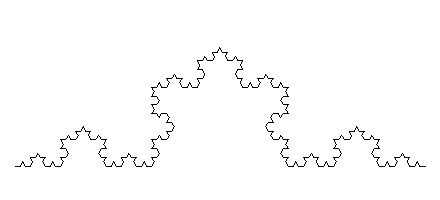 | Koch's curve Axiom: F Rule: F > F-F++F-F Angle: 60 Koch's curve |
| 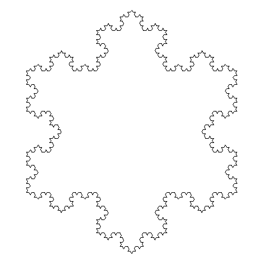 | Koch's snowflake Axiom: F++F++F Rule: F > F-F++F-F Angle: 60 Koch's snowflake |
| 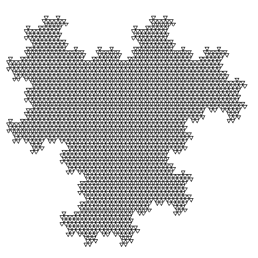 | Axiom: F+F+F Rule: F > F-F+F Angle: 120 |
| 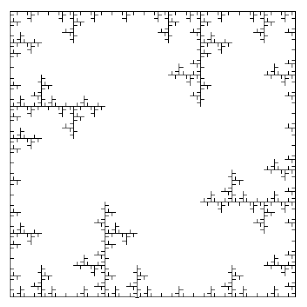 | Axiom: F+F+F+F Rule: F > FF+F++F+F Angle: 90 Ice fractals |
| 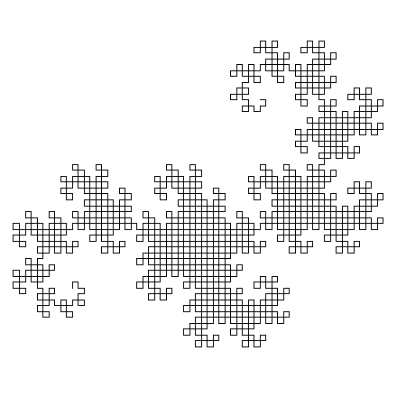 | Dragon curve Axiom: FX Rules: X > X+YF+ Y > -FX-Y Angle: 90 Dragon curve |
| 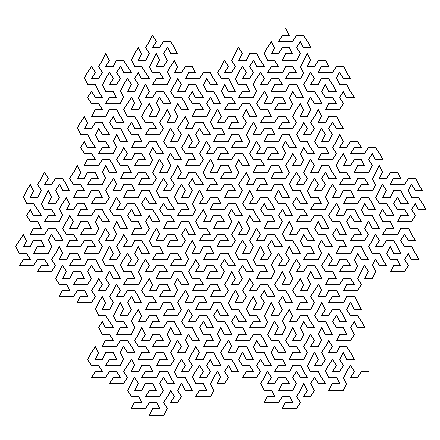 | Gosper's curve Axiom: XF Rules: X > X+YF++YF-FX--FXFX-YF+ Y > -FX+YFYF++YF+FX--FX-Y Angle: 60 Gosper's curve |
| 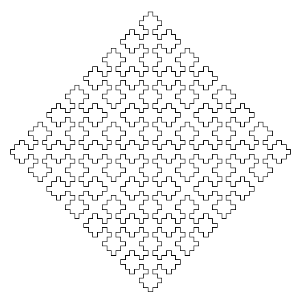 | Serpinski curve Axiom: F+XF+F+XF Rule: X > XF-F+F-XF+F+XF-F+F-X Angle: 90 |
| 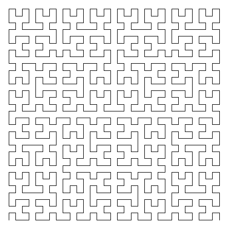 | Gilbert's curve Axiom: X Rules: X > -YF+XFX+FY- Y > +XF-YFY-FX+ Angle: 90 Gilbert's curve |
| 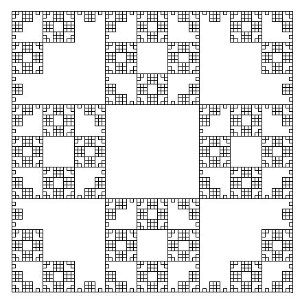 | Axiom: F+F+F+F Rule: F > FF+F+F+F+FF Angle: 90 |
| 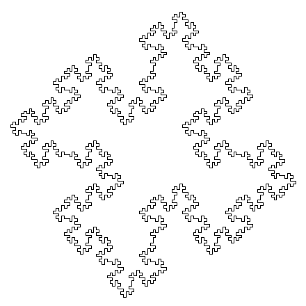 | Axiom: F+F+F+F Rule: F > F+F-F-FF+F+F-F Angle: 90 Generalizations of the Koch's curve<> |
| 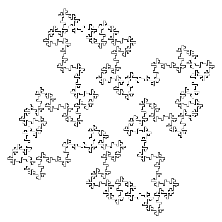 | Axiom: F+F+F+F Rule: F > F+F-F-FFF+F+F-F Angle: 90 Generalizations of the Koch's curve |
| 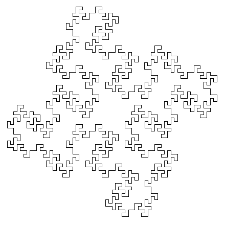 | Axiom: F+F+F+F Rule: F > F-FF+FF+F+F-F-FF+F+F-F-FF-FF+F Angle: 90 Generalizations of the Koch's curve |
| 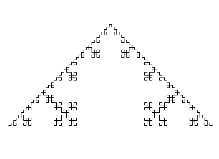 | Quadratic Snowflake Axiom: F Rule: F > F-F+F+F-F Angle: 90 |
| 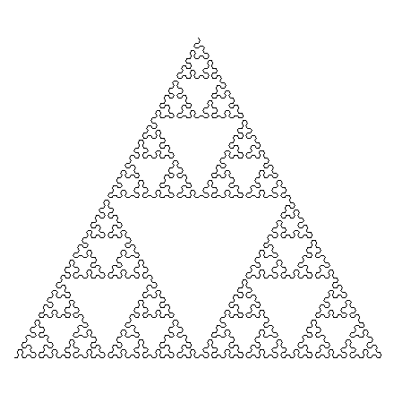 | Axiom: YF Rules: X > YF+XF+Y Y > XF-YF-X Angle: 60 |
| 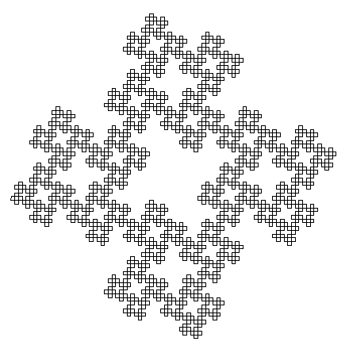 | Axiom: F+F+F+F Rule: F > F+F-F+F+F Angle: 90 |
| 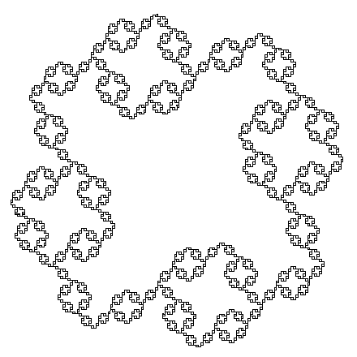 | Axiom: F+F+F+F Rule: F > FF+F+F+F+F+F-F Angle: 90 |
| 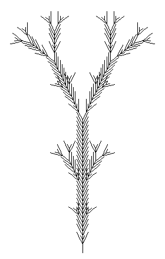 | A bush Axiom: Y Rules: X > X[-FFF][+FFF]FX Y > YFX[+Y][-Y] Angle: π/7 |
| 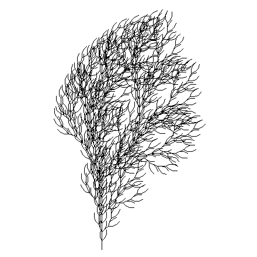 | A bush Axiom: F Rule: F > FF+[+F-F-F]-[-F+F+F] Angle: π/8 P. Bourke L-System Bush |
| 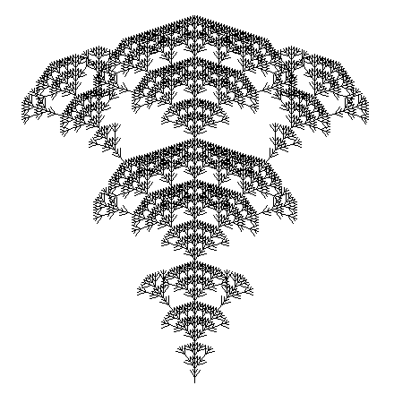 | A bush Axiom: F Rule: F > F[+FF][-FF]F[-F][+F]F Angle: π/5 |
| 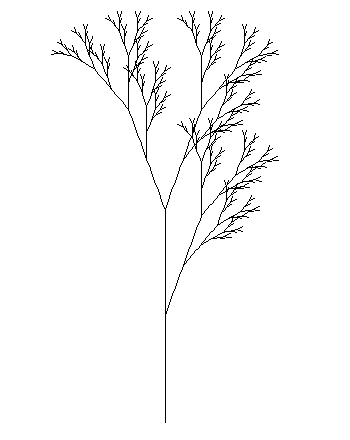 | A bush Axiom: X Rules: F > FF X > F[+X]F[-X]+X Angle: π/9 |
| 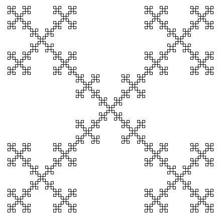 | A bush Axiom: F-F-F-F Rule: F > F-F+F+F-F Angle: 90 MathWorld Box Fractal |
| 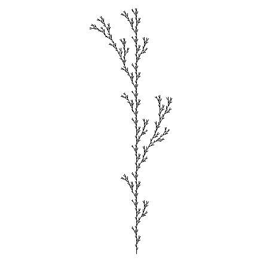 | Сорняк Axiom: F Rule: F > F[+F]F[-F]F Angle: π/7 Из галереи Дмитрия Зайкова |
| 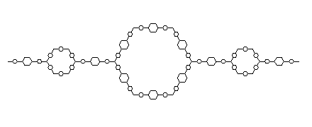 | Axiom: F Rules: F > FXF X > [-F+F+F]+F-F-F+ Angle: 60 Из галереи Дмитрия Зайкова |
| 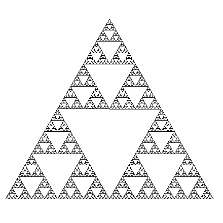 | Serpinski triangle Axiom: FXF--FF--FF Rules: F > FF X > --FXF++FXF++FXF-- Angle: 60 Serpinski triangle |
| 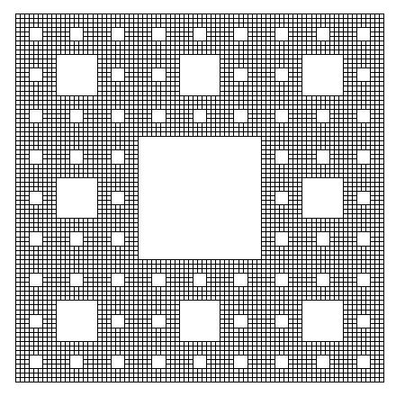 | Serpinski carpet Axiom: F Rule: F > FFF[+FFF+FFF+FFF] Angle: 90° Serpinski carpet |
| 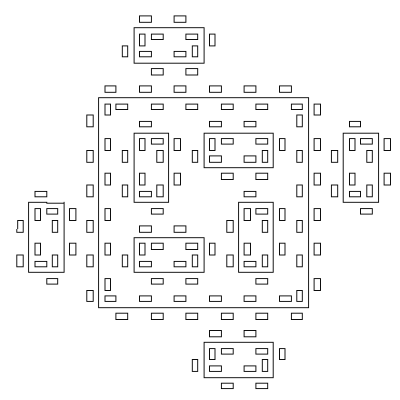 | Мозаика Axiom: F-F-F-F Rules: F > F-b+FF-F-FF-Fb-FF+b-FF+F+FF+Fb+FFF b > bbbbbb Angle: 90° Здесь b означает переместиться вперёд на один шаг, не прорисовывая след. Р. М. Кроновер, Фракталы и хаос динамических системах, стр. 36. |
| 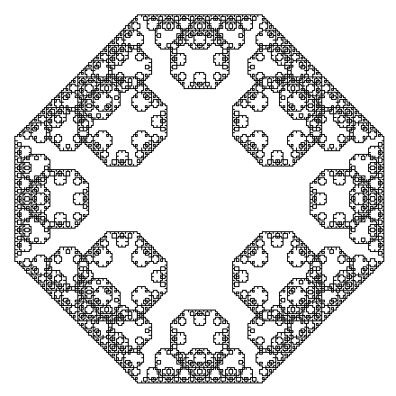 | Levy curve Axiom: F++F++F++F Rule: F > -F++F- Angle: 45° Кривая Леви Lévy C curve |
| 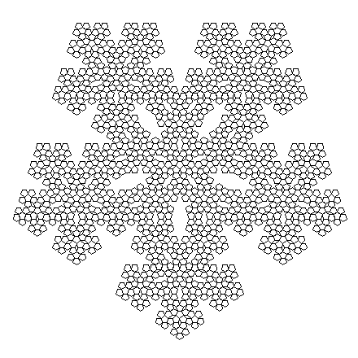 | Axiom: F++F++F++F++F Rule: F > F++F++F+++++F-F++F Angle: 36° P. Bourke Pentaplexity |
| 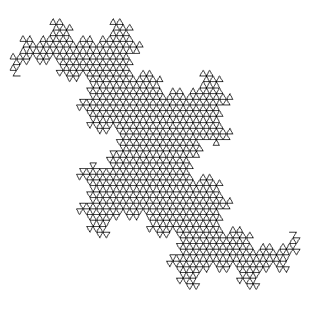 | Axiom: F Rule: F > F+F-F Angle: 120° William McWorter Terdragon |
| 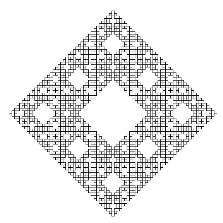 | Sierπnski Carpet Axiom: F Rules: F > F+F-F-F-b+F+F+F-F b > bbb Angle: 90° Здесь b означает переместиться вперёд на один шаг, не прорисовывая след. William McWorter Sierπnski Carpet Ковёр Серпинского |
| 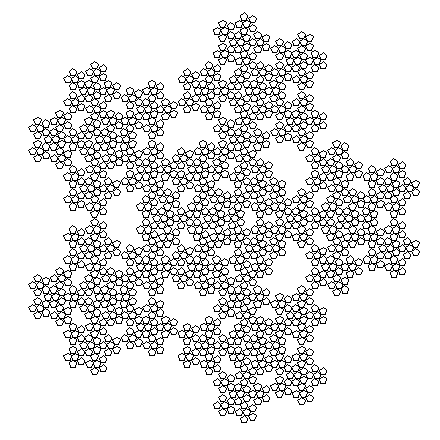 | Axiom: F-F-F-F-F Rule: F > F-F++F+F-F-F Angle: 72° William McWorter Pentigree |
| 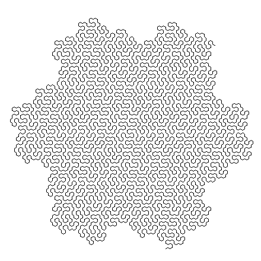 | Axiom: X Rules: F > X > -F++F-X-F--F+Y---F--F+Y+F++F-X+++F++F-X-F++F-X+++F--F+Y-- Y > +F++F-X-F--F+Y+F--F+Y---F--F+Y---F++F-X+++F++F-X+++F--F+Y Angle: 30° Gary Teachout Hex-7-b |
| 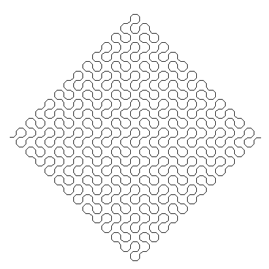 | Axiom: FX Rules: F > X > FX-FY-FX+FY+FX+FY+FX+FY+FX-FY-FX-FY-FX-FY-FX+FY+FX Y > FY Angle: 45° Gary Teachout Peano-c |
| 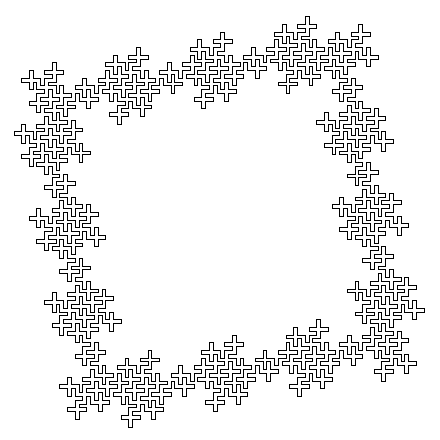 | Axiom: XYXYXYX+?XYXYXYX+?XYXYXYX+?XYXYXYX Rules: F > X > FX+FX+FXFY-FY- Y > +FX+FXFY-FY-FY Angle: 90° William McWorter Border1 |
| 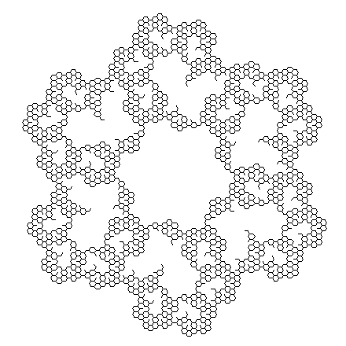 | Axiom: F--F--F--F--F--F Rule: F > -F[--F--F]++F--F+ Angle: 30° Adrian Mariano Doily |
| 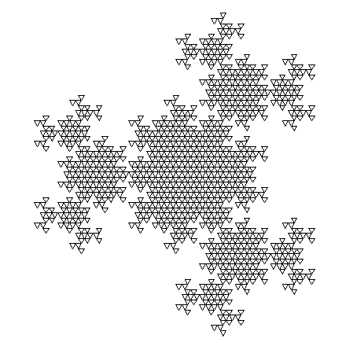 | Axiom: F+F+F Rule: F > F+FF-F Angle: 120° William McWorter Maze01 |
| 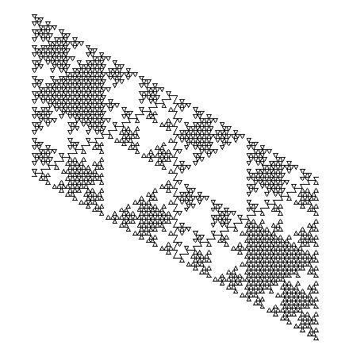 | Axiom: X Rules: F > X > FY+FYFY-FY Y > FX-FXFX+FX Angle: 120° William McWorter Maze&Fractal1 |
| 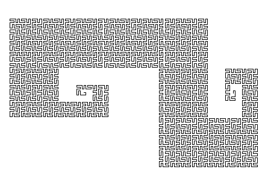 | Axiom: X Rules: F > X > FX+FX+FXFYFX+FXFY-FY-FY- Y > +FX+FX+FXFY-FYFXFY-FY-FY Angle: 90° William McWorter Moore |
| 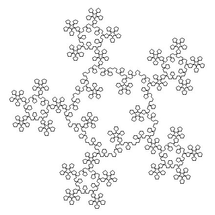 | Axiom: X-X-X-X-X Rules: F > X > FX-FX-FX+FY+FY+FX-FX Y > FY+FY-FX-FX-FY+FY+FY Angle: 72° William McWorter Pentant |
| 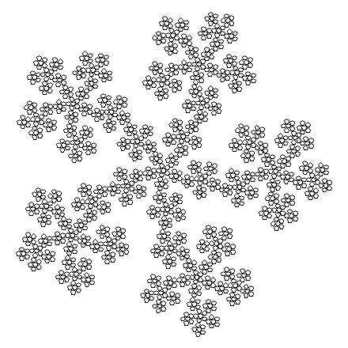 | Axiom: F-F-F-F-F Rule: F > F-F-F++F+F-F Angle: 72° William McWorter Pentl |
| 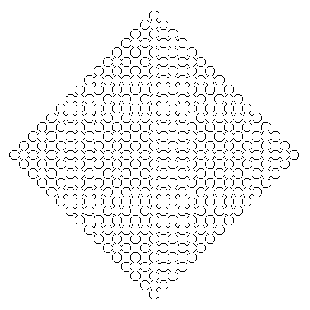 | Axiom: L--F--L--F Rules: L > +R-F-R+ R > -L+F+L- Angle: 45° William McWorter Sierπnsk |
| 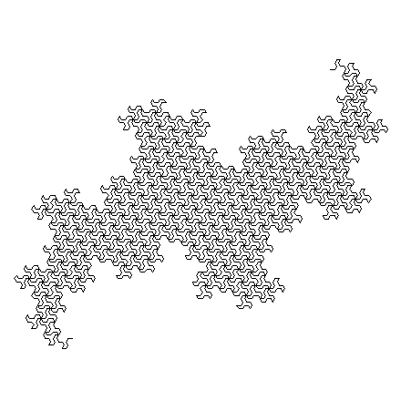 | Axiom: X Rules: X > F-F-F+F+FX++F-F-F+F+FX--F-F-F+F+FX F > Angle: 60° William McWorter Tiling1 |
| 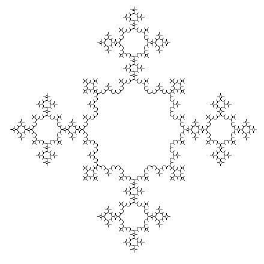 | Axiom: F++++F Rule: F > F+F+F++++F+F+F Angle: 45° Anthony Hanmer ADH231a |
| 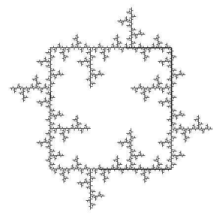 | Axiom: F+F+F+F++F-F-F-F Rule: F > F+F++F+FF Angle: 90° Anthony Hanmer ADH256a |
| 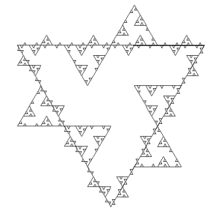 | Axiom: F++F++F+++F--F--F Rule: F > FF++F++F++FFF Angle: 60° Anthony Hanmer ADH258a |
Materials from the site fractalworld.xaoc.ru were used (site doesn't exist anymore).